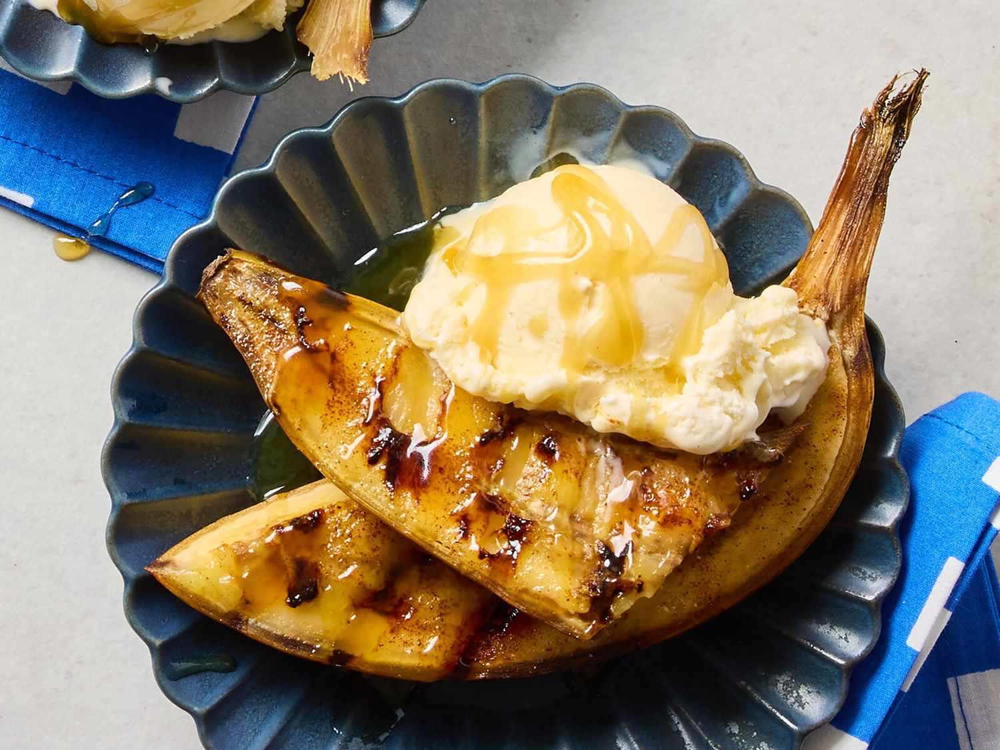

Everyone loves the taste of a classic soft ripe banana. But have you ever tried grilling one? This easy, healthy, grilled banana reciped accompained by a tasty DIY coconut cream-caramel sauce will blow your taste buds away! For the best results, use ripe bananas and serve them alongside coconut flakes and ice cream.